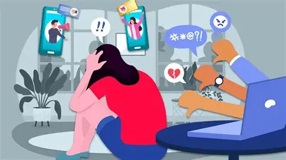

Gần đây, hàng loạt vụ lùm xùm vạ miệng, phát ngôn thiếu chuẩn mực của một số cá nhân có tầm ảnh hưởng (KOLs, nghệ sĩ) trên không gian mạng đã làm dấy lên làn sóng phẫn nộ. Đã đến lúc cần những biện pháp chế tài cứng rắn hơn để làm sạch môi trường số.
Hệ lụy từ những "tấm gương mờ"
Không thể phủ nhận sức ảnh hưởng khổng lồ của các nghệ sĩ và nhà sáng tạo nội dung đối với giới trẻ. Tuy nhiên, sự phát triển quá nhanh của các nền tảng mạng xã hội đã kéo theo tình trạng "ngáo quyền lực" của một bộ phận người nổi tiếng.
Những phát ngôn lệch chuẩn, hành vi kích động, công kích cá nhân hay cổ xúy lối sống độc hại đang trực tiếp đầu độc tư duy của bộ phận khán giả nhỏ tuổi. Nhiều người hâm mộ trẻ vì bảo vệ thần tượng mà sẵn sàng buông lời thóa mạ, tạo ra những cuộc hỗn chiến ngôn từ độc hại trên các diễn đàn trực tuyến.
Cần chế tài đủ sức răn đe
Nhiều chuyên gia cho rằng, việc chỉ dừng lại ở mức phạt hành chính vài triệu đồng là "muối bỏ bể", chưa đủ sức răn đe so với nguồn lợi khổng lồ mà các cá nhân này thu được từ sự chú ý của dư luận (bất chấp là tai tiếng).

Sức khỏe tinh thần của giới trẻ bị ảnh hưởng nghiêm trọng bởi môi trường mạng độc hại.
Việc áp dụng các biện pháp mạnh tay như hạn chế phát sóng, cấm biểu diễn (thường được gọi nôm na là "phong sát") đối với những cá nhân vi phạm đạo đức nghiêm trọng đang nhận được sự đồng tình rất lớn từ công chúng. Đây được xem là "liều thuốc đắng" cần thiết để chấn chỉnh lại trật tự showbiz và làm sạch môi trường internet.
Để xây dựng một không gian mạng văn minh, ngoài sự vào cuộc quyết liệt của các cơ quan quản lý, bản thân mỗi người dùng mạng xã hội cũng cần trang bị cho mình "bộ lọc" thông tin sắc bén. Việc kiên quyết tẩy chay những nội dung rác và những cá nhân đi ngược lại với chuẩn mực đạo đức xã hội chính là quyền lực lớn nhất của khán giả.